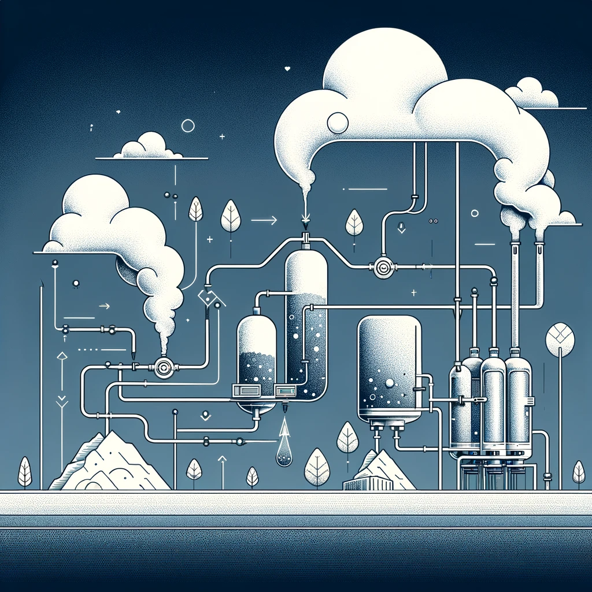
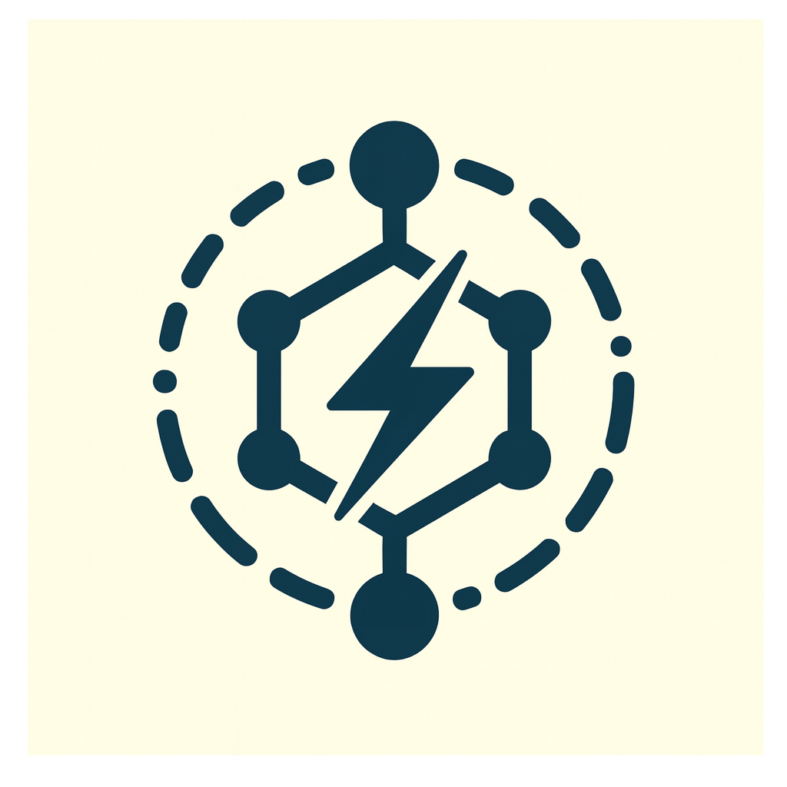
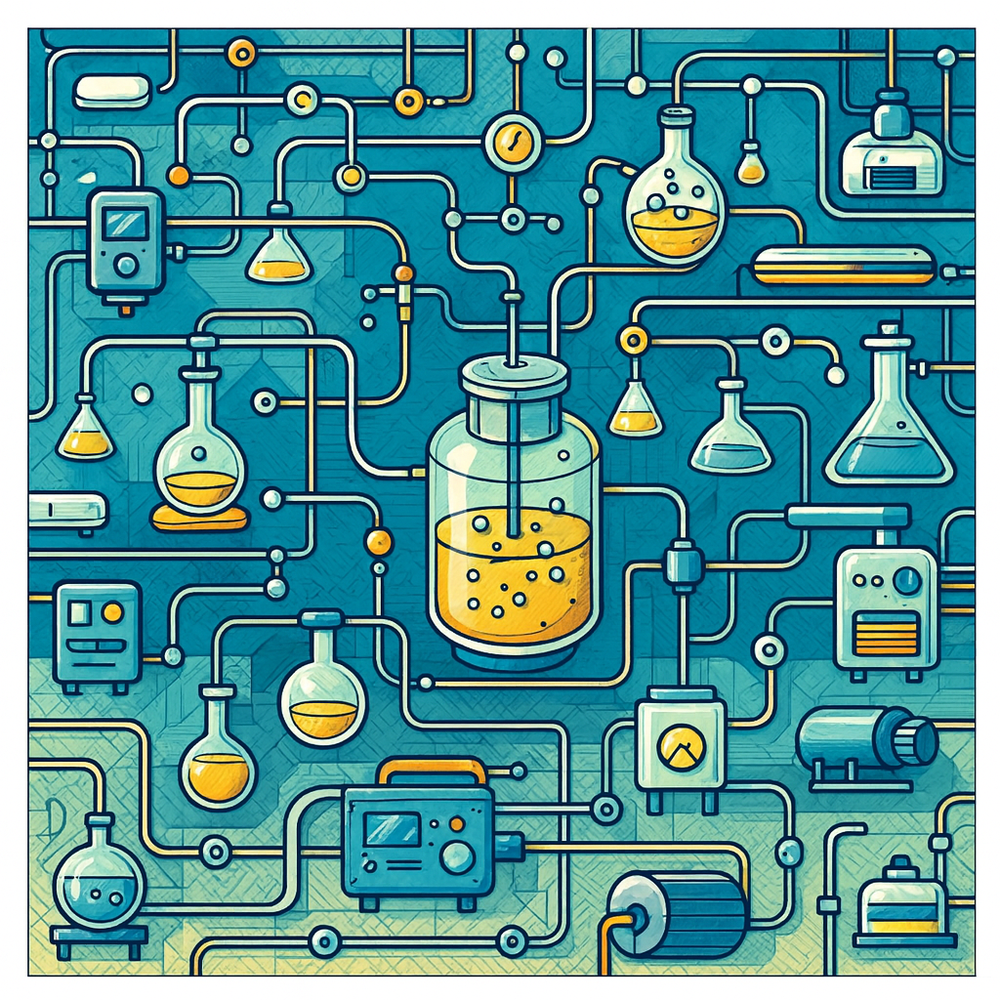

Research

R1: Energy-Efficient Separations and Recovery
We develop separation and recovery systems that use molecular design, redox control, and interfacial tuning to achieve high selectivity with low energy input. By coupling binding thermodynamics, transport, and regeneration pathways, we create electronically driven cycles compatible with continuous operation. Our work targets liquid, gas, and metal-ion separations, emphasizing stable, modular processes that outperform conventional thermal or pressure-swing methods.
R2: Advanced Molecular Catalysis
We design catalytic cycles that use electrons, photons, and molecular structure to regulate activation and bond-forming steps. Our focus includes energy-efficient CO2 conversion to fuels and programmable, step-controlled catalysis where electrochemical and photochemical steps are independently tuned. This framework enables selective, mechanistically clear pathways that outperform conventional single-step schemes while connecting molecular behavior with practical catalytic performance.

